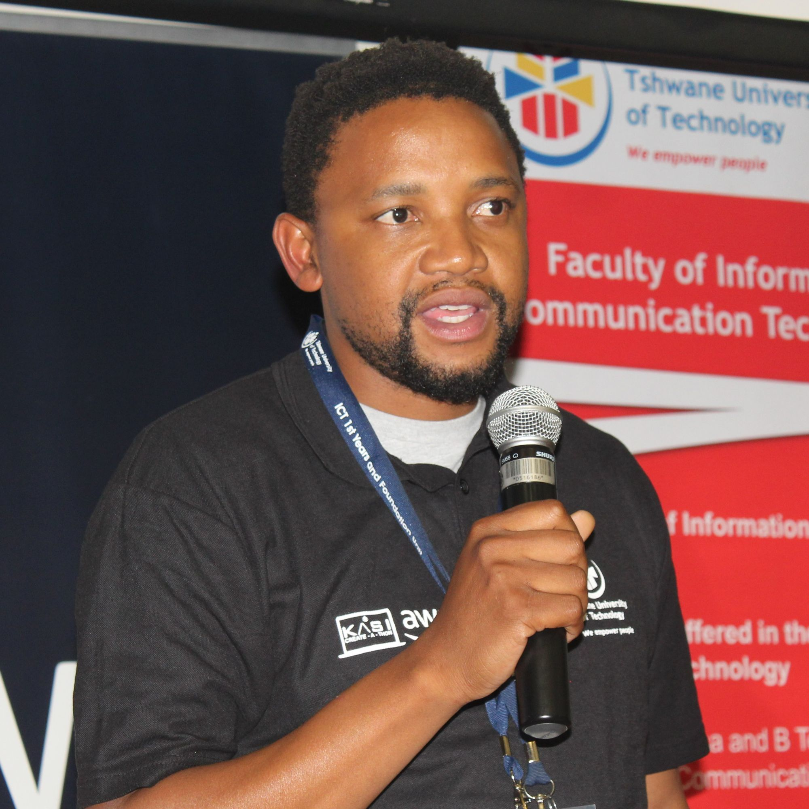

Mashitishi Benson Phurutsi is a 21st century lecturer at TUT with a vision to make
studying in historically
disadvantaged communities “fashionable”. He is currently lecturing a B-Tech module in the Faculty of
ICT. He
is in possession of the following academic qualifications: B Tech in Software Development, B-Tech in
Project
Management, and M-Tech in IT: Business Information Systems. He has interest in research areas like
cloud
computing, AI, ubiquitous learning, and hybrid learning.
Phurutsi was appointed as HOD for ICT First
Year and
Foundation Unit since 2017. He is currently a young and vibrant member of TUT strategic and governance
structures including ICT Executive Committee, ICT Faculty Board and Soshanguve Campus Management
Council. He
has more than 10 years of academic experience and over 5 years’ experience in a managerial position.
Since
2013, he founded and managed the operations of a work simulated environment called the Informatics
Community
Engagement Programme (ICEP) with a valued proposition of Work Integrated Learning (WIL) opportunities
through
development of digital solutions like TUT Orientation App, GBV App, tRes App and many more. Phurutsi
is a
Chief Organizer and he shouldered a national responsibility to prepare the 4IR+ catalysts through the
TVH &
ICEP.